토목산업기사 (2018-03-04 기출문제)
1과목: 응용역학
1. 그림과 같은 지름 80cm의 원에서 지름 20cm의 원을 도려낸 나머지 부분의 도심(圓心) 위치(
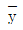
)는?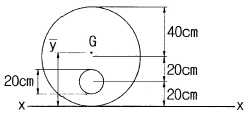
- 40.125cm
- 40.625cm
- 41.137cm
- 41.333cm
(정답률: 62%)

2. 그림과 같은 트러스에서 부재 V(중앙의 연직재)의 부재력은 얼마인가?
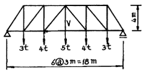
- 5t(인장)
- 5t(압축)
- 4t(인장)
- 4t(압축)
(정답률: 73%)
3. 그림(A)의 양단힌지 기둥의 탄성좌굴하중이 20t이었다면, 그림 (B)기둥의 좌굴하중은?
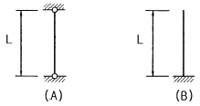
- 1.25t
- 2.5t
- 5t
- 10t
(정답률: 72%)
4. 다음 중 정정구조물의 처짐 해석법이 아닌 것은?
- 모멘트 면적법
- 공액보법
- 가상일의 원리
- 처짐각법
(정답률: 48%)
5. 다음의 2경간 연속보에서 지점 C에서의 수직 반력은 얼마인가?
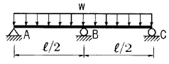
- 3ωℓ/32
- ωℓ/16
- 5ωℓ/32
- 3ωℓ/16
(정답률: 62%)
6. 지름이 5cm, 길이가 200cm인 탄성체 강봉을 15mm 만큼 늘어나게 하려면 얼마의 힘이 필요한가? (단, 탄성계수 E=2.1×106kg/cm2)
- 약 2061t
- 약 206t
- 약 3091t
- 약 309t
(정답률: 66%)
7. 지간 10m인 단순보에 등분포하중 20kg/m가 만재되어 있을 때 이 보에 발생하는 최대 전단력은?
- 100kg
- 125kg
- 150kg
- 200kg
(정답률: 52%)
8. 다음 그림과 같은 세 힘에 대한 합력(R)의 작용점은 0점에서 얼마의 거리에 있는가?
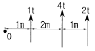
- 1m
- 2m
- 3m
- 4m
(정답률: 74%)
9. 다음 부정정 구조물의 부정정 차수를 구한 값은?
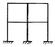
- 8
- 12
- 16
- 20
(정답률: 70%)
10. 보의 단면에서 휨모멘트로 인한 최대 휨응력이 생기는 위치는 어느 곳인가?
- 중립축
- 중립축과 상단의 중간점
- 중립축과 하단의 중간점
- 단면 상ㆍ하단
(정답률: 74%)
11. 그림과 같이 600kg의 힘이 A점에 작용하고 있다. 케이블 AC와 강봉 AB에 작용하는 힘의 크기는?
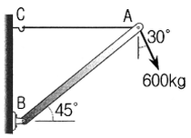
- FAB=600kg, FAC=0kg
- FAB734.8kg, FAC819.6kg
- FAB819.6kg, FAC519.6kg
- FAB155.3kg, FAC519.6kg
(정답률: 52%)
12. 아래 그림과 같은 3힌지(Hinge) 아치의 A점의 수평반력(HA)은?
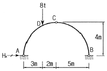
- 2t
- 3t
- 4t
- 5t
(정답률: 58%)
13. 지름이 D인 원형 단면의 단주에서 핵(Core)의 지름은?
- D/2
- D/3
- D/4
- D/6
(정답률: 79%)
14. 단면 1차모멘트의 단위로서 옳은 것은?
- cm
- cm2
- cm3
- cm4
(정답률: 69%)
15. “재료가 탄성적이고 Hooke의 법칙을 따르는 구조물에서 지점침하와 온도 변화가 없을 때 한 역계 Pn에 의해 변형되는 동안에 다른 역계 Pm이 한 외적인 가상일은 Pm역계에 의해 변형하는 동안에 Pn역계가 한 외적인 가상일과 같다”는 것은 다음 중 어느 것인가?
- 베티의 법칙
- 가상일의 원리
- 최소일의 정리
- 카스틸리아노의 정리
(정답률: 53%)
16. 아래의 정정보에서 A지점의 수직반력(RA)은?
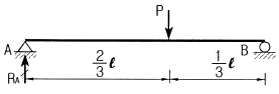
- P/4
- P/3
- P/2
- 2P/3
(정답률: 65%)
17. 단순보에 하중이 작용할 때 다음 설명 중 옳지 않은 것은?
- 등분포하중이 만재될 때 중앙점의 처짐각이 최대가 된다.
- 등분포하중이 만재될 때 최대처짐은 중앙점에서 일어난다.
- 중앙에 집중하중이 작용할 때의 최대처짐은 하중이 작용하는 곳에서 생긴다.
- 중앙에 집중하중이 작용하면 양지점에서의 처짐각이 최대로 된다.
(정답률: 51%)
18. 프아송비(v)가 0.25인 재료의 프아송수(m)는?
- 2
- 3
- 4
- 5
(정답률: 77%)
19. 반지름이 r인 원형단면에 전단력 S가 작용할 때 최대 전단응력(τmax)의 값은?
- 3S/4πr2
- 4S/3πr2
- 3S/2πr2
- 2S/3πr2
(정답률: 63%)
20. 그림과 같은 단순보에서 C점의 휨모멘트는?
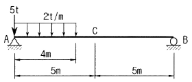
- 4tㆍm
- 6tㆍm
- 8tㆍm
- 10tㆍm
(정답률: 65%)
2과목: 측량학
21. 1：5000 축척 지형도를 이용하여 1：25000 축척 지형도 1매를 편집하고자 한다면, 필요한 1：5000 축척 지형도의 총 매수는?
- 25매
- 20매
- 15매
- 10매
(정답률: 78%)
22. 그림과 같이 표면 부자를 하천 수면에 띄워 A점을 출발하여 B점을 통과할 때 소요시간이 1분 40초였다면 하천의 평균 유속은? (단, 평균 유속을 구하기 위한 계수는 0.8로 한다.)
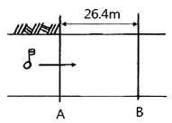
- 0.09m/sec
- 0.19m/sec
- 0.21m/sec
- 0.36m/sec
(정답률: 54%)
23. 지상 100m×100m의 면적을 4cm2로 나타내기 위한 도면의 축척은?
- 1：250
- 1：500
- 1：2500
- 1：5000
(정답률: 53%)
24. 클로소이드 곡선에 대한 설명으로 옳은 것은?
- 곡선의 반지름 R, 곡선길이 L, 매개변수 A의 사이에는 RL＝A2의 관계가 성립한다.
- 곡선의 반지름에 비례하여 곡선길이가 증가하는 곡선이다.
- 곡선길이가 일정할 때 곡선의 반지름이 크면 접선각도 커진다.
- 곡선 반지름과 곡선길이가 같은 점을 동경이라 한다.
(정답률: 64%)
25. 폐합다각형의 관측결과 위거오차 －0.0⑤m, 경거오차 －0.042m, 관측길이 327m의 성과를 얻었다면 폐합비는?
- 1/20
- 1/330
- 1/770
- 1/7730
(정답률: 61%)
26. 토공작업을 수반하는 종단면도에 계획선을 넣을 때 고려하여야 할 사항으로 옳지 않은 것은?
- 계획선은 필요와 요구에 맞게 한다.
- 절토는 성토로 이용할 수 있도록 운반거리를 고려해야 한다.
- 단조로움을 피하기 위하여 경사와 곡선을 병설하여 가능한 많이 설치한다.
- 절토량과 성토량은 거의 같게 한다.
(정답률: 77%)
27. 등고선의 성질에 대한 설명으로 옳지 않은 것은?
- 어느 지점의 최대경사 방향은 등고선과 평행한 방향이다.
- 경사가 급한 지역은 등고선 간격이 좁다.
- 동일 등고선 위의 지점들은 높이가 같다.
- 계곡선(합선)은 등고선과 직교한다.
(정답률: 54%)
28. 그림과 같은 개방 트래버스에서 CD측선의 방위는?
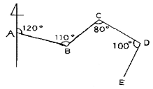
- N50°W
- S30°E
- S50°W
- N30°E
(정답률: 42%)
29. 비행고도 3km에서 초점거리 15cm인 사진기로 항공사진을 촬영하였다면, 길이 40m 교량의 사진상 길이는?
- 0.2cm
- 0.4cm
- 0.6m
- 0.8m
(정답률: 63%)
30. GNSS 위성을 이용한 측위에 측점의 3차원적 위치를 구하기 위하여 수신이 필요한 최소 위성의 수는?
- 2
- 4
- 6
- 8
(정답률: 58%)
31. 하천 양안의 고저차를 관측할 때 교호수준측량을 하는 가장 주된 이유는?
- 개인오차를 제거하기 위하여
- 기계오차(시준축 오차)를 제거하기 위하여
- 과실에 의한 오차를 제거하기 위하여
- 우연오차를 제거하기 위하여
(정답률: 66%)
32. 그림과 같은 삼각형의 꼭지점 A, B, C의 좌표가 A(50, 20), B(20, 50), C(70, 70)일 때, A를 지나며 ΔABC의 넓이를 m：n＝4：3으로 분할하는 P점의 좌표는? (단, 좌표의 단위는 m이다.)
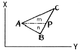
- (58.6, 41.4)
- (41.4, 58.6)
- (50.6, 63.4)
- (50.4, 65.6)
(정답률: 55%)
33. 그림에서 A, B 사이에 단곡선을 설치하기 위하여 ∠ADB의 2등분선 상의 C점을 곡선의 중점으로 선택하였다면 곡선의 접선 길이는? (단, DC＝20m, I＝80°20ʹ이다.)
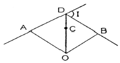
- 64.80m
- 54.70m
- 32.40m
- 27.34m
(정답률: 50%)
34. 30m당 ±1.0mm의 오차가 발생하는 줄자를 사용하여 480m의 기선을 측정하였다면 총 오차는?
- ±3.0mm
- ±3.5mm
- ±4.0mm
- ±4.5mm
(정답률: 67%)
35. 직접수준측량을 하여 그림과 같은 결과를 얻었을 때 B점의 표고는? (단, A점의 표고는 100m이고 단위는 m이다.)
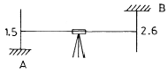
- 101.1m
- 101.5m
- 104.1m
- 1⑤.2m
(정답률: 64%)
36. 그림과 같이 2개의 직선구간과 1개의 원곡선 부분으로 이루어진 노선을 계획할 때, 직선구간 AB의 거리 및 방위각이 700m, 80°이고, CD의 거리 및 방위각은 1000m, 110°이었다. 원곡선의 반지름이 500m라면, A점으로부터 D점까지의 노선거리는?
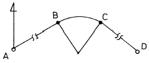
- 1830.8m
- 1874.4m
- 1961.8m
- 2048.9m
(정답률: 43%)
37. 유심삼각망에 관한 설명으로 옳은 것은?
- 삼각망 중 가장 정밀도가 높다.
- 대규모 농지, 단지 등 방대한 지역의 측량에 적합하다.
- 기선을 확대하기 위한 기선삼각망측량에 주로 사용된다.
- 하천, 철도, 도로와 같이 측량 구역의 폭이 좁고 긴 지형에 적합하다.
(정답률: 59%)
38. 수심 h인 하천의 유속측정에서 수면으로부터 0.2h, 0.6h, 0.8h의 유속이 각각 0.625m/sec, 0.564 m/sec, 0.382m/sec일 때 3점법에 의한 평균유속은?
- 0.498m/sec
- 0.5⑤m/sec
- 0.511m/sec
- 0.533m/sec
(정답률: 68%)
39. 삼각측량을 실시하려고 할 때, 가장 정밀한 방법으로 각을 측정할 수 있는 방법은?
- 단각법
- 배각법
- 방향각법
- 각관측법
(정답률: 64%)
40. 항공삼각측량에 대한 설명으로 옳은 것은?
- 항공연직사진으로 세부 측량이 기준이 될 사진망을 짜는 것을 말한다.
- 항공사진측량 중 정밀도가 높은 사진측량을 말한다.
- 정밀도화기로 사진모델을 연결시켜 도화작업을 하는 것을 말한다.
- 지상기준점을 기준으로 사진좌표나 모델좌표를 측정하여 측지좌표로 환산하는 측량이다.
(정답률: 46%)
3과목: 수리학
41. 후르드(Froude) 수와 한계경사 및 흐름의 상태 중 상류일 조건으로 옳은 것은? (단, Fr：후르드수, I：수면경사, V：유속, y：수심, Ic：한계경사, Vc：한계유속, yc：한계심)
- V > Vc
- Fr > 1
- I< Ic
- y < yc
(정답률: 65%)
42. 연직 평면에 작용하는 전수압의 작용점 위치에 관한 설명 중 옳은 것은?
- 전수압의 작용점은 항상 도심보다 위에 있다.
- 전수압의 작용점은 항상 도심보다 아래에 있다.
- 전수압의 작용점은 항상 도심과 일치한다.
- 전압의 작용점은 도심 위에 있을 때도 있고 아래에 있을 때도 있다.
(정답률: 54%)
43. 원형 단면의 관수로에 물이 흐를 때 층류가 되는 경우는? (단, Re는 레이놀즈(Reynolds) 수이다.)
- Re>4000
- 4000>Re>2000
- Re>2000
- Re<2000
(정답률: 64%)
44. 관수로와 개수로의 흐름에 대한 설명으로 옳지 않은 것은?
- 관수로는 자유표면이 없고 개수로는 있다.
- 관수로는 두 단면 간의 속도차로 흐르고 개수로는 두 단면 간의 압력차로 흐른다.
- 관수로는 점성력의 영향이 크고 개수로는 중력의 영향이 크다.
- 개수로는 후르드 수(Fr)로 상류와 사류로 구분할 수 있다.
(정답률: 53%)
45. 동수경사선(hydraulic grade line)에 대한 설명으로 옳은 것은?
- 에너지선보다 언제나 위에 위치한다.
- 개수로 수면보다 언제나 위에 있다.
- 에너지선보다 유속수두만큼 아래에 있다.
- 속도수두와 위치수두의 합을 의미한다.
(정답률: 49%)
46. 지름이 0.2cm인 미끈한 원형 관내를 유량 0.8cm3/s로 물이 흐르고 있을 때, 관 1m당의 마찰 손실수두는? (단, 동점성계수 v＝1.12×10-2cm2/s)
- 20.20cm
- 21.30cm
- 22.20cm
- 23.20cm
(정답률: 34%)
47. 개수로에서 지배단면(Control Section)에 대한 설명으로 옳은 것은?
- 개수로내에서 압력이 가장 크게 작용하는 단면이다.
- 개수로내에서 수로경사가 항상 같은 단면을 말한다.
- 한계수심이 생기는 단면으로서 상류에서 사류로 변하는 단면을 말한다.
- 개수로내에서 유속이 가장 크게 되는 단면이다.
(정답률: 63%)
48. 심정(깊은 우물)에서 유량(양수량)을 구하는 식은? (단, H0: 우물 수심, r0：우물 반지름, K：투수계수, R：영향원 반지름, H：지하수면 수위)
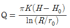
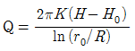
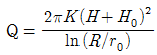
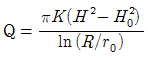
(정답률: 43%)
49. 평행하게 놓여 있는 관로에서 4점의 유속이 3m/s, 압력이 294kPa이고, B점의 유속이 1m/s이라면 B점의 압력은? (단, 무게 1kg＝9.8N)
- 30kPa
- 31kPa
- 298kPa
- 309kPa
(정답률: 45%)
50. 점성계수(μ)의 차원으로 옳은 것은?
- [ML-2T-2]
- [ML-1T-1]
- [ML-1T-2]
- [ML2T-1]
(정답률: 46%)
51. 모세관 현상에 관한 설명으로 옳은 것은?
- 모세관 내의 액체의 상승 높이는 모세관 지름의 제곱에 반비례한다.
- 모세관 내의 액체의 상승 높이는 모세관의 크기에만 관계된다.
- 모세관의 높이는 액체의 특성과 무관하게 주위의 액체면보다 높게 상승한다.
- 모세관 내의 액체의 상승 높이는 모세관 주위의 중력과 표면장력 등에 관계된다.
(정답률: 66%)
52. 정상류의 흐름에 대한 설명으로 가장 적합한 것은?
- 모든 점에서 유동특성이 시간에 따라 변하지 않는다.
- 수로의 어느 구간을 흐르는 동안 유속이 변하지 않는다.
- 모든 점에서 유체의 상태가 시간에 따라 일정한 비율로 변한다.
- 유체의 입자들이 모두 열을 지어 질서 있게 흐른다.
(정답률: 49%)
53. 그림에서 A점에 작용하는 정수압 P1, P2, P3, P4에 관한 사항 중 옳은 것은?
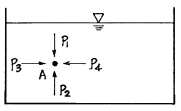
- P1의 크기가 가장 작다.
- P2의 크기가 가장 크다.
- P3의 크기가 가장 크다.
- P1, P2, P3, P4의 크기는 같다.
(정답률: 75%)
54. 그림에서 수문에 단위폭당 작용하는 힘(F)을 구하는 운동량 방정식으로 옳은 것은? (단, 바닥마찰은 무시하며, ω는 물의 단위중량, 로는 물의 밀도, Q는 단위폭당 유량이다.)
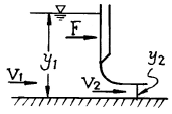
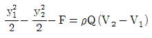
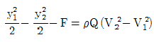
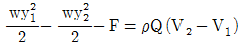
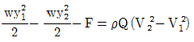
(정답률: 33%)
55. Darcy의 법칙에 대한 설명으로 틀린 것은?
- Reynolds수가 클수록 안심하고 적용할 수 있다.
- 평균유속이 손실수두와 비례관계를 가지고 있는 흐름에 적용될 수 있다.
- 정상류 흐름에서 적용될 수 있다.
- 층류 흐름에서 적용 가능하다.
(정답률: 63%)
56. 수평 원형관 내를 물이 층류로 흐를 경우 Hagen-Poiseuille의 법칙에서 유량 Q에 대한 설명으로 옳은 것은? (여기서, ω：물의 단위 중량, ℓ：관의 길이, hL：손실수두, μ：점성계수)
- 유량과 반지름 R의 관계는
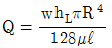
이다. - 유량과 압력차 △P의 관계는
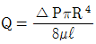
이다. - 유량과 동수경사 I의 관계는
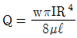
이다. - 유량과 지름 D의 관계는
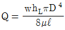
이다.
(정답률: 54%)
57. 개수로의 단면이 축소되는 부분의 흐름에 관한 설명으로 옳은 것은?
- 상류가 유입되면 수심이 감소하고 사류가 유입되면 수심이 증가한다.
- 상류가 유입되면 수심이 증가하고 사류가 유입되면 수심이 감소한다.
- 유입되는 흐름의 상태(상류 또는 사류)와 무관하게 수심이 증가한다.
- 유입되는 흐름의 상태(상류 또는 사류)와 무관하게 수심이 감소한다.
(정답률: 42%)
58. 단면적이 1m2인 수조의 측벽에 면적 20cm2인 구멍을 내어서 물을 빼낸다. 수위가 처음의 2m에서 1m로 하강하는데 걸리는 시간은? (단, 유량계수 C＝0.6)
- 25.0초
- 108.2초
- 155.9초
- 169.5 초
(정답률: 35%)
59. 부체의 경심(M), 부심(C), 무게중심(G)에 대하여 부체가 안정되기 위한 조건은?
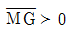
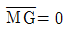
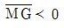
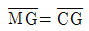
(정답률: 63%)
60. 그림과 같이 삼각위어의 수두를 측정한 결과 30cm이었을 때 유출량은? (단, 유량계수는 0.62이다.)
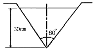
- 0.042m3/s
- 0.125m3/s
- 0.139m3/s
- 0.417m3/s
(정답률: 32%)
4과목: 철근콘크리트 및 강구조
61. 강도설계법에서 사용하는 강도감소계수의 사용목적으로 거리가 먼 것은?
- 재료 강도와 치수가 변동할 수 있으므로 부재의 강도 저하 확률에 대비한 여유를 두기 위해서
- 부정확한 설계 방정식에 대비한 여유를 두기 위해서
- 구조물에서 차지하는 부재의 중요도 등을 반영하기 위해서
- 구조해석할 때의 가정 및 계산의 실수로 인해 야기될지 모르는 초과하중의 영향에 대비하기 위해서
(정답률: 56%)
62. 단철근 직사각형보를 강도 설계법으로 설계할 때 과소철근보로 설계하는 이유로 옳은 것은?
- 처짐을 감소시키기 위해서
- 철근이 먼저 파괴되는 것을 방지하기 위해서
- 철근을 절약해서 경제적인 설계가 되도록 하기 위해서
- 압축력의 부족으로 인한 콘크리트의 취성파괴를 방지하기 위해서
(정답률: 50%)
63. 강도설계법에 대한 기본가정 중 옳지 않은 것은?
- 평면인 단면은 변형 후에도 평면을 유지한다.
- 철근과 콘크리트의 응력과 변형률은 중립축으로부터 거리에 비례한다.
- 압축측 연단에서 콘크리트의 최대 변형률은 0.003으로 가정한다.
- 콘크리트의 인장강도는 휨계산에서 무시한다.
(정답률: 53%)
64. 철근콘크리트 깊은 보 및 깊은 보의 전단설계에 관한 설명으로 잘못된 것은?
- 순경간(ln)이 부재 깊이의 4배 이하이거나 하중이 받침부로부터 부재 깊이의 2배 거리 이내에 작용하는 보를 깊은 보라 한다.
- 수직전단철근의 간격은 d/5 이하 또한 300mm 이하로 하여야 한다.
- 수평전단철근의 간격은 d/5 이하 또한 300mm 이하로 하여야 한다.
- 깊은 보에서는 수평전단철근이 수직전단철근 보다 전단보강 효과가 더 크다.
(정답률: 39%)
65. 합성형 교량에서 콘크리트 슬래브와 강재 보의 상부 플랜지를 일체화시키기 위해 사용하는 것은?
- 브레이싱
- 스티프너
- 전단 연결재
- 리벳
(정답률: 52%)
66. 나선철근 또는 띠철근이 배근된 압축부재에서 축방향 철근의 순간격에 대한 설명으로 옳은 것은?
- 40mm 이상, 또한 철근 공칭지름의 1.5배 이상으로 하여야 한다.
- 50mm 이상, 또한 철근 공칭지름 이상으로 하여야 한다.
- 50mm 이하, 또한 철근 공칭지름의 1.5배 이하로 하여야 한다.
- 40mm 이하, 또한 철근 공칭지름 이하로 하여야 한다.
(정답률: 53%)
67. 폭(b)은 300mm, 유효깊이(d)는 550mm인 직사각형 철근 콘크리트 보에 전단력과 힘만이 작용할 때 콘크리트가 받을 수 있는 설계 전단 강도(øVc)는 약 얼마인가? (단, fck=27MPa)
- 101kN
- 107kN
- 114kN
- 122kN
(정답률: 60%)
68. 인장 부재의 볼트 연결부를 설계할 때 고려되지 않는 항목은?
- 지압응력
- 볼트의 전단응력
- 부재의 항복응력
- 부재의 좌굴응력
(정답률: 50%)
69. 일반 콘크리트 부재의 해당 지속 하중에 대한 탄성처짐이 30mm이었다면 크리프 및 건조수축에 따른 추가적인 장기처짐을 고려한 최종 총 처짐량은? (단, 하중재하기간은 5년이고, 압축철근비 ρʹ는 0.002이다.)
- 80.8mm
- 84.6mm
- 89.4mm
- 95.2mm
(정답률: 66%)
70. 강도설계법에서 D25(공칭직경 25.4mm)인 인장철근의 기본정착 길이는 얼마인가? (단, fck=21MPa, fy=300MPa이고, 보통중량 콘크리트를 사용한다.)
- 800mm
- 917mm
- 998mm
- 1038mm
(정답률: 62%)
71. 그림과 같은 필렛 용접에서 용접부의 목두께로 가장 적합한 것은?
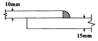
- 7.07mm
- 10.0mm
- 12.6mm
- 15mm
(정답률: 64%)
72. 강도 설계법에서 힘 부재의 등가 사각형 압축 응력 분포의 깊이(a)는 아래의 표와 같은 식으로 구할 수 있다. 콘크리트의 설계기준 압축강도(fck)가 40MPa인 경우 β1의 값은?
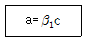
- 0.683
- 0.712
- 0.766
- 0.801
(정답률: 64%)
73. 그림과 같은 프리스트레스트 콘크리트의 경간 중앙점에서 강선을 꺾었을 때, 이 꺾은점에서의 상향력(上向力) U의 값은?
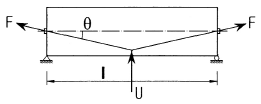
- U=2F・tanθ
- U=F・tanθ
- U=2F・sinθ
- U=F・sinθ
(정답률: 64%)
74. 아래 그림과 같은 복철근 직사각형 보에서 Asʹ=1916-mm2, As=4790mm2이다. 등가 직사각형의 응력의 깊이 a는? (단, fck=28MPa, fy=400MPa이다.)
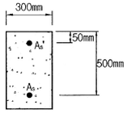
- 157mm
- 161mm
- 173mm
- 185mm
(정답률: 58%)
75. 다음 중 집중하중을 분포시키거나 균열을 제어할 목적으로 주철근과 직각에 가까운 방향으로 배치한 보조철근은?
- 사인장철근
- 비틀림철근
- 배력철근
- 조립용철근
(정답률: 56%)
76. 프리텐션 PSC 부재의 단면이 300mm×500mm이고 120mm2의 PS 강선 5개가 단면의 도심에 배치되어 있다. 초기 프리스트레스가 1000MPa이고 n＝6일 때 콘크리트의 탄성 수축에 의한 프리스트레스 감소량은?
- 24MPa
- 27MPa
- 32MPa
- 35MPa
(정답률: 54%)
77. 앞부벽식 옹벽의 앞부벽에 대한 설명으로 옳은 것은?
- T형보로 설계하여야 한다.
- 전면벽에 지지된 캔틸레버로 설계하여야 한다.
- 연속보로 설계하여야 한다.
- 직사각형보로 설계하여야 한다.
(정답률: 71%)
78. 아래 그림과 같은 단철근 직사각형 보의 균형철근비 ρb의 값은? (단, fck=21MPa, fy=280MPa이다.)
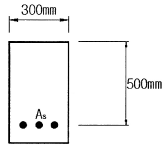
- 0.0369
- 0.0437
- 0.⑤24
- 0.0614
(정답률: 68%)
79. 슬래브와 보를 일체로 친 대칭 T형보의 유효폭을 결정할 때 고려해야 할 사항으로 틀린 것은? (단, bω플랜지가 있는 부재의 복부폭)
- (양쪽으로 각각 내민 플랜지 두께의 8배씩)＋bω
- 양쪽의 슬래브의 중심 간 거리
- 보의 경간의 1/4
- (인접 보와의 내측 거리의 1/2)＋bω
(정답률: 61%)
80. 프리스트레스트 콘크리트에서 포스트텐션 긴장재의 마찰손실을 구할 때 사용하는 근사식은 아래의 표와 같다. 이러한 근사식을 사용할 수 있는 조건에 대한 설명으로 옳은 것은?
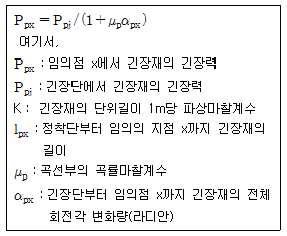
 값이 0.3 이상인 경우
값이 0.3 이상인 경우 값이 0.3 이하인 경우
값이 0.3 이하인 경우 값이 0.5 이상인 경우
값이 0.5 이상인 경우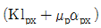
값이 0.5 이하인 경우
(정답률: 54%)
5과목: 토질 및 기초
81. 어느 흙의 지하수면 아래의 흙의 단위중량이 1.94g/cm3이었다. 이 흙의 간극비가 0.84일 때 이 흙의 비중을 구하면?
- 1.65
- 2.65
- 2.73
- 3.73
(정답률: 37%)
82. 응력경로(stress path)에 대한 설명으로 틀린 것은?
- 응력경로를 이용하면 시료가 받는 응력의 변화과정을 연속적으로 파악할 수 있다.
- 응력경로에는 전응력으로 나타내는 전응력 경로와 유효응력으로 나타내는 유효응력 경로가 있다.
- 응력경로는 Mohr의 응력원에서 전단응력이 최대인 점을 연결하여 구해진다.
- 시료가 받는 응력상태를 응력경로로 나타내면 항상 직선으로 나타내어진다.
(정답률: 53%)
83. 지하수위가 지표면과 일치되며 내부마찰각이 30°, 포화단위중량(γsat)이 2.0t/m3이고, 점착력이 0인 사질토로 된 반무한사면이 15°로 경사져있다. 이때 이 사면의 안전율은?
- 1.00
- 1.08
- 2.00
- 2.15
(정답률: 52%)
84. 점성토의 전단특성에 관한 설명 중 옳지 않은 것은?
- 일축압축시험 시 peak점이 생기지 않을 경우는 변형률 15%일 때를 기준으로 한다.
- 재성형한 시료를 함수비의 변화없이 그대로 방치하면 시간이 경과되면서 강도가 일부 회복하는 현상을 액상화 현상이라 한다.
- 전단조건(압밀상태, 배수조건 등)에 따라 강도 정수가 달라진다.
- 포화점토에 있어서 비압밀 비배수 시험의 결과 전단 강도는 구속압력의 크기에 관계없이 일정하다.
(정답률: 48%)
85. 흙의 다짐 에너지에 관한 설명으로 틀린 것은?
- 다짐 에너지는 램머(rammer)의 중량에 비례한다.
- 다짐 에너지는 램머(rammer)의 낙하고에 비례한다.
- 다짐 에너지는 시료의 체적에 비례한다.
- 다짐 에너지는 타격수에 비례한다.
(정답률: 60%)
86. 흙 속으로 물이 흐를 때, Darcy법칙에 의한 유속(v)과 실제유속(vs) 사이의 관계로 옳은 것은?
- vs < v
- vs > v
- vs = v
- vs = 2v
(정답률: 53%)
87. 10m×10m의 정사각형 기초 위에 6t/m2 등분포하중이 작용하는 경우 지표면 아래 10m에서의 수직응력을 2：1분포법으로 구하면?
- 1.2t/m2
- 1.5t/m2
- 1.88t/m2
- 2.11t/m2
(정답률: 51%)
88. 유선망(流線網)에서 사용되는 용어를 설명한 것으로 틀린 것은?
- 유선：흙 속에서 물입자가 움직이는 경로
- 등수두선：유선에서 전수두가 같은 점을 연결한 선
- 유선망：유선과 등수두선의 조합으로 이루어지는 그림
- 유로：유선과 등수두선이 이루는 통로
(정답률: 56%)
89. 어떤 흙의 입경가적곡선에서 D10= 0.⑤mm, D30=0.09mm, D60=0.15mm이었다. 균등 계수 Cu 와 곡률계수 Cg의 값은?
- Cu ＝3.0, Cg ＝1.08
- Cu ＝3.5, Cg ＝2.08
- Cu ＝3.0, Cg ＝2.45
- Cu ＝3.5, Cg ＝1.82
(정답률: 65%)
90. 두께 6m의 점토층이 있다. 이 점토의 간극비(e0)는 2.0이고 액성한계(ωl)는 70%이다. 압밀하중을 2kg/cm2에서 4kg/cm2로 증가시킬 때 예상되는 압밀침하량은? (단, 압축지수 Cc는 Skempton의 식 Cc=0.009(ωl-10)을 이용할 것)
- 0.33m
- 0.49m
- 0.65m
- 0.87m
(정답률: 38%)
91. 어떤 흙 시료에 대하여 일축압축시험을 실시한 결과, 일축압축강도(qu)가 3kg/cm, 파괴면과 수평면이 이루는 각은 45°이었다. 이 시료의 내부마찰각(ø)과 점착력(c)은?
- ø=0, c＝1.5kg/cm2
- ø＝0, c＝3kg/cm2
- ø＝90°, c＝1.5kg/cm2
- ø＝45°, c＝0
(정답률: 52%)
92. 사질토 지반에서 직경 30cm의 평판재하시험 결과 30t/m2의 압력이 작용할 때 침하량이 5mm 라면, 직경 1.5m의 실제 기초에 30t/m2의 하중이 작용할 때 침하량의 크기는?
- 28mm
- 50mm
- 14mm
- 25mm
(정답률: 27%)
93. 흙 속에서 물의 흐름에 영향을 주는 주요 요인소가 아닌 것은?
- 흙의 유효입경
- 흙의 간극비
- 흙의 상대밀도
- 유체의 점성계수
(정답률: 49%)
94. 기초의 구비조건에 대한 설명으로 틀린 것은?
- 기초는 상부하중을 안전하게 지지해야 한다.
- 기초의 침하는 절대 없어야 한다.
- 기초는 최소 동결깊이 보다 깊은 곳에 설치해야 한다.
- 기초는 시공이 가능하고 경제적으로 만족해야 한다.
(정답률: 58%)
95. 토압의 종류로는 주동토압, 수동토압 및 정지토압이 있다. 다음 중 그 크기의 순서로 옳은 것은?
- 주동토압＞수동토압＞정지토압
- 수동토압＞정지토압＞주동토압
- 정지토압＞수동토압＞주동토압
- 수동토압＞주동토압＞정지토압
(정답률: 67%)
96. 다음의 사운딩(Sounding)방법 중에서 동적인 사운딩은?
- 이스키메타(Iskymeter)
- 베인 전단시험(Vane Shear Test)
- 화란식 원추 관입시험(Dutch Cone Penetration)
- 표준관입시험(Standard Penetration Test)
(정답률: 58%)
97. 다음의 기초형식 중 직접기초가 아닌 것은?
- 말뚝기초
- 독립기초
- 연속기초
- 전면기초
(정답률: 58%)
98. 아래 표의 Terzaghi의 극한 지지력 공식에 대한 설명으로 틀린 것은?
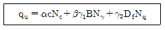
- α, β는 기초 형상 계수이다.
- 원형기초에서 B는 원의 직경이다.
- 정사각형 기초에서 의 값은 1.3이다.
- Nc, Nγ, Nq는 지지력 계수로서 흙의 점착력에 의해 결정된다.
(정답률: 64%)
99. 모래치환법에 의한 현장 흙의 단위무게시험에서 표준모래를 사용하는 이유는?
- 시료의 부피를 알기 위해서
- 시료의 무게를 알기 위해서
- 시료의 입경을 알기 위해서
- 시료의 함수비를 알기 위해서
(정답률: 55%)
100. 다음과 같은 토질시험 중에서 현장에서 이루어지지 않는 시험은?
- 베인(Vane)전단시험
- 표준관입시험
- 수축한계시험
- 원추관입시험
(정답률: 39%)
6과목: 상하수도공학
101. 상수도시설에 설치되는 펌프에 대한 설명 중 옳지 않은 것은?
- 수량변화가 큰 경우, 대소 두 종류의 펌프를 설치하거나 또는 회전속도제어 등에 의하여 토출량을 제어한다.
- 펌프는 예비기를 설치하되 펌프가 정지되더라도 급수에 지장이 없는 경우에는 생략할 수 있다.
- 펌프는 용량이 클수록 효율이 낮으므로 가능한 한 소용량으로 한다.
- 펌프는 가능한 한 동일용량으로 하여 소모품이나 예비품의 호환성을 갖게 한다.
(정답률: 63%)
102. 수원의 구비요건에 대한 설명으로 옳지 않은 것은?
- 수질이 좋아야 한다.
- 수량이 풍부해야 한다.
- 가능한 한 낮은 곳에 위치해야 한다.
- 상수 소비자에게 가까운 곳에 위치해야 한다.
(정답률: 72%)
103. 하수관 중 가장 부식되기 쉬운 곳은?
- 관정부
- 바닥부분
- 양편의 벽쪽
- 하수관 전체
(정답률: 61%)
104. 다음 펌프에 관한 사항 중 옳지 않은 것은?
- 펌프의 축동력은 토출량, 전양정 및 펌프효율에 의한 식으로 구한다.
- 원심펌프는 낮은 양정에만 적합하다.
- 펌프 가동시 담당하는 수두는 정수두와 마찰수두를 포함한 제반손질 수두의 합이다.
- 펌프의 특성곡선이란 유량과 펌프의 양정 효율, 축동력의 관계를 그래프로 나타낸 것이다.
(정답률: 63%)
1⑤. 강우강도 I＝4000/(t＋30)mm/hr[t：분], 유역면적 5km2, 유입시간 300초, 유출계수 0.8, 하수관거 길이 1.2km, 관내유속 2.0m/s인 경우, 합리식에 의한 최대우수유출량은?
- 98.77m3/s
- 987.7m3/s
- 98.77m3/hr
- 987.7m3/hr
(정답률: 37%)
106. 송수관로를 계획할 때에 고려 사항에 대한 설명으로 옳지 않은 것은?
- 가급적 단거리가 되어야 한다.
- 이상수압을 받지 않도록 한다.
- 송수방식은 반드시 자연유하식으로 해야 한다.
- 관로의 수평 및 연직방향의 급격한 굴곡은 피한다.
(정답률: 65%)
107. 우수조정지의 설치목적과 직접적으로 관련이 없는 것은?
- 하수관거의 유하능력이 부족한 곳
- 하수처리장의 처리능력이 부족한 곳
- 하류지역의 펌프장 능력이 부족한 곳
- 방류수역의 유하능력이 부족한 곳
(정답률: 49%)
108. 하수도계획을 하수도의 역할이 다양화되고 있는 사회적인 요구에 부응할 수 있도록 장기적인 전망을 고려하여 수립할 때 포함되어야 하는 사항이 아닌 것은?
- 침수방지 계획
- 지속발전 가능한 도시구축 계획
- 수질보전 계획
- 슬러지 처리 및 자원화 계획
(정답률: 57%)
109. 합류식 배제방식의 특성과 관계없는 것은?
- 폐쇄의 염려가 없다.
- 우수에 의한 관거 내의 자연세척이 이루어진다.
- 우천시 월류가 없다.
- 검사 및 수리가 비교적 용이하다.
(정답률: 56%)
110. 상수도시설 중 배수관은 급수관을 분기하는 지점에서 배수관내의 최소동수압을 얼마이상 확보하여야 하는가?
- 50kPa
- 150kPa
- 500kPa
- 710kPa
(정답률: 63%)
111. Alum(Al2SO)4)3⋅18H2O) 25mg/L를 주입하여 탁도가 30mg/L인 원수 1000m3/day를 응집처리 할 때 필요한 Alum 주입량은?
- 25kg/day
- 30kg/day
- 35kg/day
- 55kg/day
(정답률: 39%)
112. 하수처리법 중 활성슬러지법에 대한 설명으로 옳은 것은?
- 세균을 제거함으로써 슬러지를 정화한다.
- 부유물을 활성화시켜 침전ㆍ부착시킨다.
- 1가지 미생물군에 의해서만 처리가 이루어진다.
- 호기성 미생물의 대사작용에 의하여 유기물을 제거한다.
(정답률: 55%)
113. 장방형 침전지가 수심 3m, 길이 30m이고, 유입유량이 300m3/day일 때 수면적 부하율이 1m/day이면 침전지의 폭은?
- 2m
- 5m
- 8m
- 10m
(정답률: 47%)
114. 복류수에 대한 설명으로 옳은 것은?
- 비교적 양호한 수질을 얻을 수 있다.
- 지표수의 한 종류로 하천수보다 수질이 양호하다.
- 정수공정에 이용 시 침전지를 반드시 확보해야 한다.
- 조류 등의 부유 생물 농도가 높다.
(정답률: 52%)
115. 상수도 시설의 설계 시 계획취수량, 계획도수량, 계획정수량의 기준이 되는 것은?
- 계획시간최대급수량
- 계획1일 최대급수량
- 계획1일평균급수량
- 계획1일총급수량
(정답률: 72%)
116. 포기조 내에서 MLSS를 일정하게 유지하기 위한 방법으로 가장 적절한 것은?
- 포기율을 조정한다.
- 하수 유입량을 조정한다.
- 슬러지 반송율을 조정한다.
- 슬러지를 바닥에 침전시킨다.
(정답률: 55%)
117. 정수장에서 발생하는 슬러지 처리방법 중 무약품 처리법에 속하지 않는 것은?
- 동결융해법
- 열처리법
- 분무건조법
- 조립탈수법
(정답률: 45%)
118. 갈수시에도 일정 이상의 수심을 확보할 수 있으면, 연간의 수위변화가 크더라도 하천이나 호소, 댐에서의 취수시설로서 알맞고 또한 유지관리도 비교적 용이한 취수방법은?
- 취수탑에 의한 방법
- 취수관거에 의한 방법
- 집수매거에 의한 방법
- 깊은 우물에 의한 방법
(정답률: 64%)
119. 어느 종말하수처리장의 계획슬러지량은 600m3/day이고 슬러지의 함수율은 98%, 비중은 1.01이라고 한다. 슬러지 농축탱크의 고형물부하를 60kg/m2・day 기준으로 할 경우 탱크의 소요면적(S)은?
- 9.9m2
- 12.1m2
- 202m2
- 9898m2
(정답률: 28%)
120. “BOD 값이 크다”는 것이 의미하는 것은?
- 무기물질이 충분하다.
- 영양염류가 풍부하다.
- 용존산소가 풍부하다.
- 미생물 분해가 가능한 물질이 많다.
(정답률: 59%)